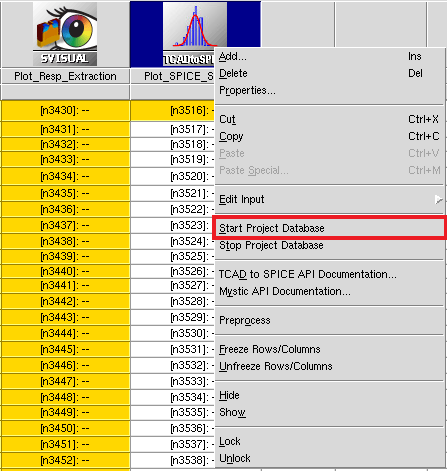
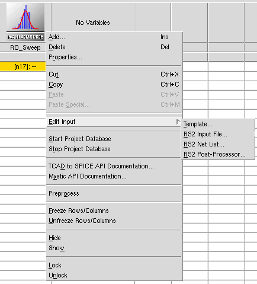
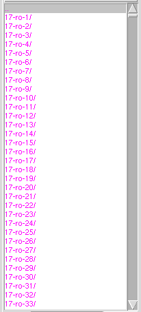
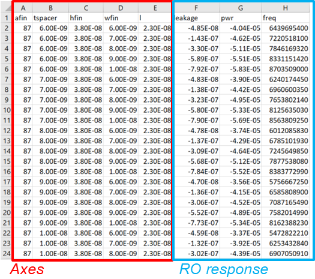

TCAD to SPICE
4. RandomSpice
4.1 Creating a RandomSpice Library
4.2 Simulating a Ring Oscillator
Objectives
- To demonstrate how to set up and use a RandomSpice library – although the demonstration is a ring oscillator, the RandomSpice simulation can be changed to any CMOS circuit.
4.1 Creating a RandomSpice Library
RandomSpice is part of the TCAD to SPICE tool suite and is designed to provide enhanced SPICE model variation capabilities, with a specific focus on process and global or local variation. RandomSpice is designed to interface with Mystic output and allows users to generate a SPICE model with an accurate response to arbitrary variations in process or TCAD setups. This is achieved through a response surface model (RSM) methodology, where the RSM axes can be an arbitrary set of TCAD splits.
To create a RandomSpice library, gpythonsh provides the builder object that is designed to collect all relevant Mystic output data and to generate a RandomSpice library based on this.
The model library can be built with the following key components:
- Base SPICE model is usually referred to as a "uniform" or "base" model. This is the only required part of the SPICE model.
- RSM model is an overlay on the uniform model, which is designed to capture arbitrary design-of-experiments (DoE) variations.
- Global generator is an overlay on the RSM model to generate random DoE points for circuit simulation.
- Local variability model (ModelGen) applies local variability based on Mystic extraction of Garand VE local variability data.
All of these components come in the form of SPICE model parameter sets extracted from Mystic, except the global generator, which is currently an input from users during the library-building stage that is addressed later in this section.
The complete project can be investigated from within Sentaurus Workbench in the directory Applications_Library/GettingStarted/tcadtospice/randomspice/ 14nmFinFETRespSurf_RS2.
A pre-executed project is also included, which contains input data for the above project, and can be found in the directory Applications_Library/GettingStarted/tcadtospice/ randomspice/14nmFinFETRespSurf_NoLV.
Prerequisites- An executed Mystic project is required (this is provided as part of this tutorial).
- Some knowledge of the TCAD to SPICE database is useful, but not critical.
4.1.1 Builder Usage
You can add different components of the RandomSpice library model by using methods of the builder object, which is injected into the gpythonsh scripting environment. The methods are described in the following table.
| Method | Component | Description |
|---|---|---|
| builder.add_device | Base SPICE model | Adds a base SPICE model under a device label; executed once per device. |
| builder.add_doe_point | RSM model | Adds a SPICE model parameter set with DoE point mapping; executed multiple times (based on target data splits). |
| builder.add_lv_distributions | Local variability model | Adds a statistical SPICE model parameter set with DoE point mapping; executed multiple times (based on target data splits). |
| builder.add_gv_distributions | Global generator | Generates random DoE points for global (process) variation simulation. |
All these methods are intended to interface directly with a TCAD to SPICE database containing the results of Mystic SPICE model extractions. For a comprehensive API of the builder, see the API documentation.
4.1.2 Builder Example
In the following example (filepath), all aspects of the builder object except local variability are covered. A prerun project (14nmFinFETRespSurf_NoLV) is provided, which includes all required Mystic outputs.
Figure 1 shows the process flow. The RandomSpice project (14nmFinFETRespSurf_RS2) links to this Mystic project (14nmFinFETRespSurf_NoLV) and retrieves the required outputs by connecting to the SWB Python database contained in that project.
Using the Python list mysticProjectPaths, the 86 splits of the Mystic project (14nmFinFETRespSurf_NoLV) can be condensed into an experiment in the RandomSpice project (14nmFinFETRespSurf_RS2) to build a RandomSpice library. If necessary, data from multiple Mystic extraction projects can also be combined into one RandomSpice library. For example, if there are two Mystic projects for NMOS and PMOS separately, RandomSpice can combine all the information from both projects as follows:
mysticProjectPaths = ["/path/to/nmos_device", "/path/to/pmos_device"]
{kind=link}
Figure 1. RandomSpice can be connected to projects of Mystic extraction through the TCAD to SPICE database. (Click image for full-size view.)
To accomplish this, the database in the Mystic project must be enabled (activated), which is usually handled by Sentaurus Workbench for any project with TCAD to SPICE tools, where the database is activated automatically any time a Sentaurus Workbench project is running. The BuildLibrary script includes commands to remotely start the database in the Mystic projects:
mysticProjectPaths = ["@pwd@/../14nmFinFETRespSurf_NoLV"]
for prj in mysticProjectPaths:
startdb(prj)
The startdb() command will attempt to activate the database in the Mystic project. However, the database can also be activated manually. To activate the database manually:
- Open the Mystic project in the graphical user interface of Sentaurus Workbench.
- Right-click any TCAD to SPICE tool icon and choose Start Project Database.
 - Connect the Mystic project and RandomSpice project as follows:
In the BuildLibrary script of the RandomSpice project, define the list of Mystic projects as follows:
mysticProjectPaths = ["@pwd@/../14nmFinFETRespSurf_NoLV"]
In this example, only one Mystic project is used.
The BuildLibrary script also defines some parameters that will be used in RandomSpice simulations, shown in the following table.
| Parameter | Type | Description |
|---|---|---|
| midpoint_metadata | Python dictionary | Stores a dictionary of device_polarity:device_label for use in SPICE simulations. |
| axes_df | Pandas DataFrame | Table of DoE coordinates in the RSM added as the RSM points are added to the builder. |
| remap_names | Python dictionary | User input dictionary of device_polarity:device_label used to define a label for the devices that will appear in the RandomSpice netlist. The script assumes only one NMOS and PMOS device will be in the RandomSpice library. |
To link all Mystic projects to the RandomSpice project, the following loop is necessary:
for prj in mysticProjectPaths:
startdb(prj)
# Switch database connection
dburl = open(f"{prj}/enigma/mongodb.conf").read()
dbi.connect(dburl)
builder.dbi = dbi
You then search for base SPICE models, which is achieved by searching for projects in the SWB Python database that have been tagged with the tool label of the Mystic_Uniform_Enigma tool instance in the Mystic project (the code here is indented because it is part of the previous for loop):
midpoint_projects = dbi.get_project(midpoint=True,
swb__tool_label="Mystic_Uniform_Enigma")
midpoint_metadata.update({p.metadata["swb"]["Type"]: p.metadata
for p in midpoint_projects})
for proj in midpoint_projects:
remap_name = remap_names[proj.metadata["swb"]["Type"]]
# Add base model card
builder.add_device(remap_name, dev_type=proj.metadata["swb"]["Type"],
dataset=list(proj.datasets)[-1], point_model=False)
The dbi object of the database interface is used to identify all projects of interest. These are returned as a list that you can iterate over using a for loop. Inside the loop, you define the label for this device type (remap_name) and then use the add_device method of the builder object to add a base SPICE model card to the builder object.
Here is the output when you print the builder.base_modelcards attribute showing label:model:
{'nfet': * Subcircuit definition
.subckt mos14n d g s b l=2.5e-08 nfin=1 rgc_en=1 rdc_en=1 rsc_en=1
.PARAM r_gc = 0
.PARAM rgc_fin = 'r_gc/nfin*rgc_en'
.PARAM r_sc = 0
.PARAM rsc_fin = 'r_sc/nfin*rsc_en'
.PARAM r_dc = 0
.PARAM rdc_fin = 'r_dc/nfin*rdc_en'
rd d d_i rdc_fin
rs s s_i rsc_fin
rg g g_i rgc_fin
mos d_i g_i s_i b mosmod l=l nfin=nfin
.model mosmod NMOS
+DEVTYPE=1
+EASUB=4.0727
+NI0SUB=1.1055e+16
+BG0SUB=1.1242
+NC0SUB=2.9951e+25
+phig=4.2305
+RDSW=50
+RDSWMIN=50
...
After adding the base SPICE models, you start to add points in the RSM. This is achieved by searching for projects in the SWB Python database that are tagged with the tool label of the Mystic_Response_Surface tool instance in the Mystic project:
rs_projects = dbi.get_project(swb__tool_label="Mystic_Response_Surface")
for proj in rs_projects:
axis_data = pd.DataFrame(proj.metadata['doe'], index=[0])
axes_df = pd.concat([axes_df, axis_data])
doe_pt = proj.metadata["doe"]
doe_pt.update({"nfin": 1})
dev_midpoint = remap_names[proj.metadata["swb"]["Type"]]
# Add RSM model points
builder.add_doe_point(dev_midpoint, doe_pt,
dataset=list(proj.datasets)[-1],
midpoint=proj.metadata["midpoint"])
After retrieving the list of target database paths (Mystic projects) using the dbi object, you iterate through them and add DoE points to the builder object by using the add_doe_point method. You also add some geometric information, which is not tagged during the extraction.
In this example, you add nfin=1 (nfin is the number of fins) as the extractions were performed for single-fin devices. Each Mystic_Response_Surface extraction node provides a coordinate–parameter set pair, which you can inspect by printing the attribute builder.resp_dict as shown here:
{'nfet': {'doe_point l 2.5e-08 hfin 4e-08 wfin 8e-09 afin 88 tspacer 8e-09 nfin 1':
mosmod.cdsc mosmod.cdscd mosmod.cgdo mosmod.cgso mosmod.deltawcv mosmod.dvtp0
mosmod.hfin mosmod.ksativ mosmod.mexp mosmod.phig mosmod.tfin mosmod.u0
0 9.676118e-02 8.313607e-02 4.907366e-10 4.907366e-10 9.700885e-09
5.236851e-02 4.000000e-08 8.885492e-01 2.390127e+00 4.230611e+00 8.000000e-09
2.538083e-02
...
At this point, the builder has all the information necessary for a base model with RSM across the five-axes DoE supplied. The builder object is executed in debug mode using the builder.build command:
builder.build("@pwd@/@nodedir@", libname="n@node@_library", doe=True,
gv_dist=False, lv_dist=False, debug=True)
during which, each aspect of the final model is printed to screen:
<<<<< Launching Builder >>>>> -> Adding device: nfet -> Device type: nmos --> Adding response surface model: ---> Adding response surface model at DoE point: doe_point l 2.5e-08 hfin 4e-08 wfin 8e-09 afin 88 tspacer 8e-09 nfin 1 ---> Adding response surface model at DoE point: doe_point l 2.3e-08 hfin 3.8e-08 wfin 1e-08 afin 89 tspacer 6e-09 nfin 1 ---> Adding response surface model at DoE point: doe_point l 2.3e-08 hfin 3.8e-08 wfin 1e-08 afin 87 tspacer 1e-08 nfin 1 ---> Adding response surface model at DoE point: doe_point l 2.7e-08 hfin 3.8e-08 wfin 6e-09 afin 89 tspacer 6e-09 nfin 1 ---> Adding response surface model at DoE point: doe_point l 2.3e-08 hfin 3.8e-08 wfin 1e-08 afin 89 tspacer 1e-08 nfin 1 ---> Adding response surface model at DoE point: doe_point l 2.7e-08 hfin 4.2e-08 wfin 6e-09 afin 87 tspacer 6e-09 nfin 1 ---> Adding response surface model at DoE point: doe_point l 2.3e-08 hfin 4.2e-08 wfin 1e-08 afin 89 tspacer 1e-08 nfin 1
After this, the RandomSpice library is saved to disk at the node output location defined in the builder.build command.
During the final stages of the script, you switch back to the database for the RandomSpice project and save some derived variables to the node database metadata for usage within the RandomSpice scripts (Single_Ro_sim and RO_Sweep) included in this project:
dburl = open("@pwd@/enigma/mongodb.conf").read()
dbi.connect(dburl)
builder.dbi = dbi
## This code is here to avoid database metadata
## queries in the RandomSpice stages.
node_prj.metadata.update({"axes_df": axes_df})
node_prj.metadata.update({"midpoint_metadata": midpoint_metadata})
node_prj.metadata.update({"remap_names": remap_names})
node_prj.save()
where:
- axes_df is a table of all DoE coordinates used to create the RSM model.
- midpoint_metadata defines the DoE coordinates for the RSM (these scripts inherently assume NMOS and PMOS DoEs are identical).
- remap_names are the SPICE model names in the RandomSpice library. These must match the model names used in the SPICE simulation netlists when RandomSpice simulations are set up.
At this point, the library is ready to be used for circuit simulation with RandomSpice.
Click to view the BuildLibrary Python file BuildLibrary_eng.py.
4.2 Simulating a Ring Oscillator
This section covers the inputs required for a PrimeSim™ HSPICE® simulation set based on RandomSpice. The response surface model (RSM) methodology implemented in RandomSpice will be used to evaluate ring oscillator (RO) behavior across a wide array of process conditions. The example considers five axes of process variation, generated from standard TCAD Sentaurus tools and characterized using Mystic, the extraction tool from the TCAD to SPICE tool suite.
This section covers the following topics:
- Section 4.2.1 Setting Up the RandomSpice Simulation
- Section 4.2.2 Setting Up the Template File
- Section 4.2.3 Example: Single Ring Oscillator Simulation
- Section 4.2.4 Example: Ring Oscillator Design-of-Experiments Sweep
- Some knowledge of SPICE simulation with the PrimeSim HSPICE tool is recommended.
4.2.1 Setting Up the RandomSpice Simulation
RandomSpice is a wrapper for the PrimeSim HSPICE tool and as such its core inputs are:
- A SPICE netlist compatible with the PrimeSim HSPICE tool, with embedded RandomSpice input commands. The RandomSpice commands define variability model behavior as well as the paths to critical inputs such as the database configuration and postprocessor (both optional).
- A postprocessor input file, which is used to extract key data from the PrimeSim HSPICE screen output or listing file.
Within the Sentaurus Workbench environment, you can also utilize a Python script to schedule jobs. As Figure 2 shows, all these inputs are available to edit through the graphical user interface of Sentaurus Workbench.

Figure 2. RandomSpice tool inputs in the graphical user interface of Sentaurus Workbench.
| Input | Format | Purpose |
|---|---|---|
| Template | Python file | Controls the execution of RandomSpice jobs. |
| RS2 input file | RandomSpice input file | Contains simulation netlist and defines key inputs for RandomSpice. For details about RandomSpice command syntax, see the RandomSpice User Guide. |
| RS2 postprocessor | Optional: Python script | Activates Python-based parsing of PrimeSim HSPICE output and allows users to save data to the TCAD to SPICE database. |
| RS2 netlist | DEPRECATED | The netlist input is now combined into the RS2 Input File. This item is kept for backward compatibility. |
4.2.2 Setting Up the Template File
The template file is a Python command file. The randomspice object in gpythonsh allows you to execute RandomSpice jobs on your compute clusters. For details, see the API documentation.
The rest of this script is Python code used to:
- Set up different simulation conditions
- Ensure the SPICE netlist is compatible with the RandomSpice library
- Harvest and visualize simulation data
4.2.2.1 Parameter Substitution
One of the main uses of the Python template file is to ensure that the simulation netlists are set up correctly. SPICE model names are applied based on the names defined in the LibraryBuilder tool instance, and the SPICE model instance parameters that are included in the RSM are applied to instances of the model in the netlist.
The main goal of this is to ensure that the RandomSpice simulation projects are portable, such that changes in the incoming front-end model and DoE variations in the RSM require no manual update to the RandomSpice simulation projects.
This is achieved by using the "Mapping" and "Instance parameter adjustment" capabilities outlined in the RandomSpice User Guide. With these settings, arbitrary SPICE model names can be "mapped" to RandomSpice keywords, and arbitrary instance parameters can be added to the model instances – enabling RSM simulation with any axes.
In the example, RandomSpice input files, the model labels are nmos and pmos, while the RandomSpice device names (as defined in the BuildLibrary script) are nfet:nmos and pfet:pmos, as follows:
xmp out in vdd vnw pmos NFIN=2
Using the RandomSpice command, you can associate the model keyword nmos to the RandomSpice keyword nfet:nmos, and pmos to the RandomSpice keyword pfet:pmos, as follows:
[models]
...
mapping = {'nmos': 'nfet:nmos', 'pmos': 'pfet:pmos'}
...
Similarly, device instance parameters can be adjusted using the commands:
[models]
...
instance_params_nfet:nmos = {'par1': val1, 'par2': val2, ...}
instance_params_pfet:pmos = {'par1': val1, 'par2': val2, ...}
...
In this case, all instances of nfet:nmos will have the above instance parameters attached to them.
These and all other RandomSpice settings can be adjusted in the Template file, by accessing the .rs2file attribute of the randomspice object as shown here:
randomspice.rs2file.SetOption('models', 'mapping', str({"nmos":"nfet:nmos",
"pmos":"pfet:pmos"}))
4.2.3 Example: Single Ring Oscillator Simulation
The section demonstrates the simulation of a single ring oscillator (RO).
4.2.3.1 Netlist File
The netlist input is now combined into the RandomSpice input file. This item is kept for backward compatibility but is now empty.
4.2.3.2 RandomSpice Input File
The RandomSpice input file includes a section of RandomSpice options, and a RO netlist in standard syntax compatible with the PrimeSim HSPICE tool. For details about the RandomSpice options, see the RandomSpice User Guide. For more information about PrimeSim HSPICE simulation syntax, see the PrimeSim™ Continuum Reference Manual: Commands and Control Options.
The RandomSpice options section starts with .rs2 and ends with .endrs2. In this example, you use Sentaurus Workbench variables to define output paths, the path to the RandomSpice library (relative to the BuildLibrary tool instance), and the database location for SPICE simulation output, as follows:
.rs2 [Circuit] netlist = None number = 1 seed = 12345678 startnum = 1 [Simulation] spice = hspice spiceargs = [Variability] statistical = False process_resp_only = True [Output] dir = @pwd@/@nodedir@/n@node@_/ro_results prefix = ro savenets = False processor = @pwd@/@nodedir@/pp@node@_eng.py [Models] library = @pwd@/@nodedir|BuildLibrary@/n@node|BuildLibrary@_library.rsl [Database] enabled = True project = @node@ dataset = @node@-ro .endrs2
The rest of the input file defines the SPICE simulation, in this case, an 11-stage RO, with a two-input NAND cell to act as an enable. In the simulation, the RO is initialized and deactivated, during which time leakage measurements are taken, then oscillation is activated, and frequency and power measurements are taken. The rest of this file is in standard PrimeSim HSPICE syntax.
Click to view the input file Single_RO_sim_inp.rs2.
4.2.3.3 RandomSpice Postprocessor File
The postprocessor input file parses the PrimeSim HSPICE .lis output file (which is printed to screen in PrimeSim HSPICE interactive mode) and provides a Python environment that can be used for data harvesting and storage. This is an optional capability, which can be deactivated through the RandomSpice input file.
When deactivated, the raw PrimeSim HSPICE .lis file is written to the defined output directory. In this case, you can use your own standard PrimeSim HSPICE output harvesting methodologies.
The following code snippet shows key components of the provided postprocessor. The code must take the form of a Python function named Process, which RandomSpice uses internally. The data variable is a string representation of the PrimeSim HSPICE .lis output file. In this example, you split this based on newline symbols (\n) and search for the specific .measure variables defined in the PrimeSim HSPICE netlist. Here, you are looking for cyc_freq, sw_pwr, and iddq measurements.
def Process(data, **extras):
results = extras['results']
circuit = extras['cid']
vals= list()
output=False
d0=[]
d1=[]
for l in data.split("\n"):
if len(l) > 0:
if 'cyc_freq' in l.lower():
try:
freq=float(l.replace('=',' ').split()[1])
except:
print("Frequency value not in line: {0}".format(l))
elif 'sw_pwr' in l.lower():
try:
pwr=float(l.replace('=',' ').split()[1])
except:
print("Power value not in line: {0}".format(l))
elif 'iddq' in l.lower():
try:
leakage=float(l.replace('=',' ').split()[1])
except:
print("Leakage value not it line: {0}".format(l))
# Push data to the database
data1={"freq":freq, "pwr":pwr, "leakage":leakage, "circuit":circuit}
dbi = results._dbi
ds=dbi.get_dataset(id=results._set_id).name
dbi.create_data(ds, data1)
return data
The identified variables are then put into a Python dictionary and saved to the database by using the dbi.create_data method.
Click to view the RandomSpice postprocessor file Single_RO_sim_pp.py.
4.2.3.4 Python Template File
The Single_RO_sim tool instance begins with some setups for the randomspice object, related to execution and database interaction.
In the following code snippet, the randomspice.wait attribute is set to True, meaning that the script execution will pause to wait for RandomSpice job completion. In other cases, this can be set to False, where you might want to execute multiple RandomSpice instances in parallel (this case is covered later). The other two Python variables such as base_inputfile_name and base_netlist_name have the full paths of the Sentaurus Workbench preprocessed RandomSpice input file and SPICE netlist, respectively. They will be used in this script.
# Set up the basics for the RandomSpice application randomspice.wait = True randomspice.clear_data = True # For netlist manipulation base_inputfile_name = "@pwd@/@nodedir@/pp@node@_eng.rs2" randomspice.inputfile = base_inputfile_name
Other parameters are used to define RandomSpice SPICE model names and instance parameters based on the axes of the RSM that is being modeled. In the Single_RO_sim tool instance of this example, only one simulation will be performed at the midpoint of the RSM. The midpoint itself is defined in the Mystic extraction project (14nmFinFETRespSurf_NoLV) and is identified in the BuildLibrary tool instance in the RandomSpice input file.
The following code extracts the midpoints and model names from the BuildLibrary tool instance:
# Set up metadata for simulations build_library = dbi.get_project(swb__tool_label="BuildLibrary") midpoints = build_library.metadata["midpoint_metadata"] remap_names = build_library.metadata["remap_names"] n_device = remap_names['nMOS'] + ":nmos" p_device = remap_names['pMOS'] + ":pmos"
This code is designed to not require any user updates even if the DoE axis names or number of axes change. In the example, the RandomSpice device name and RSM midpoints are attached automatically to the RandomSpice model mapping commands using the code:
randomspice.rs2file.SetOption('models', f'instance_params_{n_device}',
dict(midpoints['nMOS']["doe"]))
randomspice.rs2file.SetOption('models', f'instance_params_{p_device}',
dict(midpoints['pMOS']["doe"]))
randomspice.rs2file.SetOption('models', 'mapping',
str({"nmos": n_device, "pmos": p_device}))
The RandomSpice simulation is finally launched with the updated model mapping and instance parameter settings by using the simulate method:
randomspice.simulate()
The Python script will now pause its execution until the RandomSpice job has completed. The simulation output can be found in the node directory as shown in Figure 3.
{kind=link}
Figure 3. Node Explorer showing RandomSpice execution log file. (Click image for full-size view.)
Finally, the simulation outputs are gathered from the SWB Python database by using the dbi object (see Section 2.3.1 The dbi Object):
# Gather data
data = dbi.get_data(project=node_prj.name, strip=False)
pdata = pd.DataFrame()
for d in data:
pdata = pd.concat([pdata, pd.DataFrame(d.data, index=[0])])
pdata.to_csv("@pwd@/n@node@_RO_data.csv")
The final results show frequency, leakage, and power for this RO circuit.
| Circuit | Frequency [Hz] | Leakage [A] | Power [W] |
|---|---|---|---|
| 1 | 6.45E+09 | -1.70E-07 | 5.04E-05 |
Click to view the Single_RO_sim Python command file Single_RO_sim_eng.pyrs.
4.2.4 Example: Ring Oscillator Design-of-Experiments Sweep
The RO_Sweep example builds on the Single_RO_sim example, where the gpythonsh and RandomSpice environment is used to generate large amounts of data, exercising the full space of the response surface model (RSM) SPICE model.
In this example, you step through the full design-of-experiments (DoE) space and evaluate the ring oscillator (RO) response for all possible conditions. This methodology can be used to both search for an optimal response within the DoE space and to evaluate sensitivity of a circuit metric to a TCAD process split. The TCAD DoE is outlined in the following table.
| Parameter | Nominal | Range | Comments |
|---|---|---|---|
| L | 25 nm | ±2 nm | Gate length variation |
| H | 40 nm | ±2 nm | Gate height |
| W | 8 nm | ±2 nm | Fin thickness |
| A_fin | 88 | ±1 | Fin angle factor |
| T_spacer | 8 nm | ±2 nm | Spacer thickness |
All input files other than the Python template file are identical to the Single_RO_sim tool instance.
4.2.4.1 Python Template File
In this example, you have prepared a five-axis DoE, characterized using 43 NMOS and PMOS TCAD splits. To fully simulate the space, you create a full factorial grid, meaning you create a number of PrimeSim HSPICE simulations (\(N_{\text"sim"}\)) equal to:
\[ N_{\text"sim"} = N_{\text"axes"}^{N_{\text"smp"}} \]
where:
- \(N_{\text"axes"\) is the number of axes (five process variations in this example).
- \(N_{\text"smp"}\) is the number of points sampled along each axis.
\(N_{\text"smp"}\) is defined in the Python template file for this stage:
# Simulation parameters sampling = 5
As a result, this RO_Sweep tool instance will launch a total of 3125 RandomSpice simulations within an equally spaced, five-dimensional grid. This is achieved by creating linearly spaced lists across each axis, then performing a product of all sample points using the following Python commands:
# Set up the sampling points for each axis
axes_list=axes_df.columns
for k in axes_list:
axes_sweeps[k]=np.linspace(min(axes_df[k]),max(axes_df[k]), sampling)
for i,ax in enumerate(product(*axes_sweeps.values())):
...
The code inside the for loop statement is similar to the Single_RO_sim script, except that it is executed once for each of the 3125 DoE point combinations. As a result, there will now be 3125 execution directories as shown in Figure 4.

Figure 4. The RO_Sweep tool instance produces 3125 simulations within the execution folder n@node@_/randomspice.
Finally, the results are gathered using a for loop statement that relates each individual set of results with the DoE point at which they were generated:
for i,ax in enumerate(product(*axes_sweeps.values())):
pdata=pd.DataFrame()
for i,ax in enumerate(product(*axes_sweeps.values())):
print(i,ax)
data={axes_list[j]:ax[j] for j in range(len(axes_list))}
print(data)
data.update(dbi.get_data(project=node_prj.name, \
parent=f"@node@-ro-{i+1}").data)
pdata=pd.concat([pdata, pd.DataFrame(data, index=[0])])
The final output is a CSV file of the DoE points and RO measurements that can be opened in a spreadsheet application (see Figure 5).

Figure 5. Tool instance outputs a CSV file showing DoE axes and RO responses.
Visualizations of the results are also produced using the plotting capabilities of gpythonsh. A scatter matrix of the input and output space on one plot is produced using the plotter object (the plotter API can be found in the API documentation).
pdata.drop("circuit", axis=1, inplace=True)
pdata=pdata[axes_list+["freq","pwr","leakage"]]
plotter._dist_data=[pdata]
plotter.plot_scatter_matrix(filename=f"{garand.workdir}/n@node@_RO_scatterplot")
In this code, you initially omit the circuit column as this is only an integer identifier. Then, the data column order is sorted to separate DoE axes and output RO parameters. The scatter matrix allows for some basic sensitivity analysis between the axes of the DoE. The scatter matrix in Figure 6 shows that, in this example, the fin width dominates the RO responses.
{kind=link}
Figure 6. Scatter matrix of RO responses. (Click image for full-size view.)
Click to view the Python command file RO_Sweep_eng.pyrs.
Copyright © 2022 Synopsys, Inc. All rights reserved.